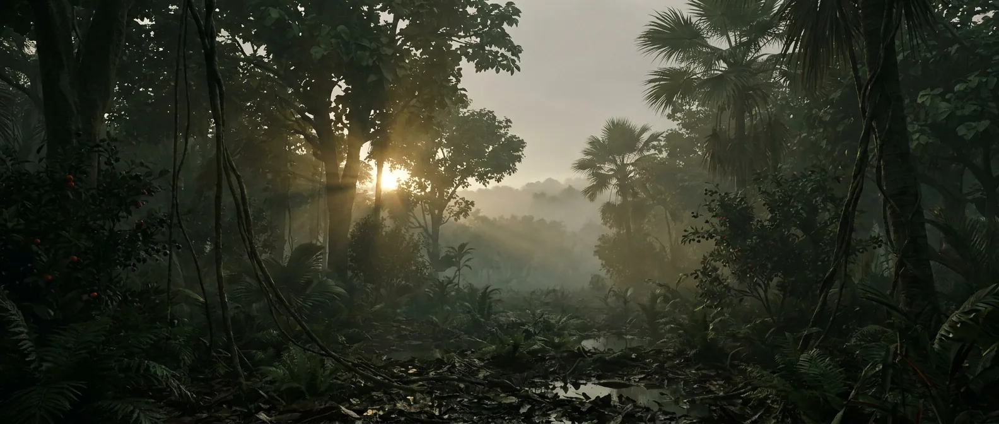
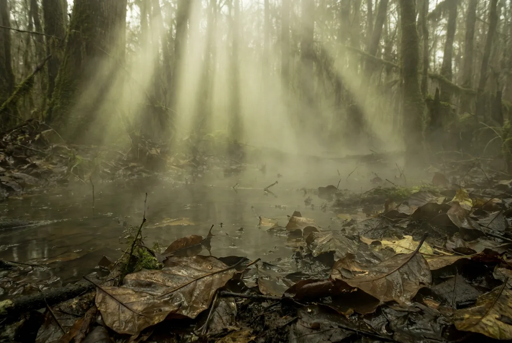
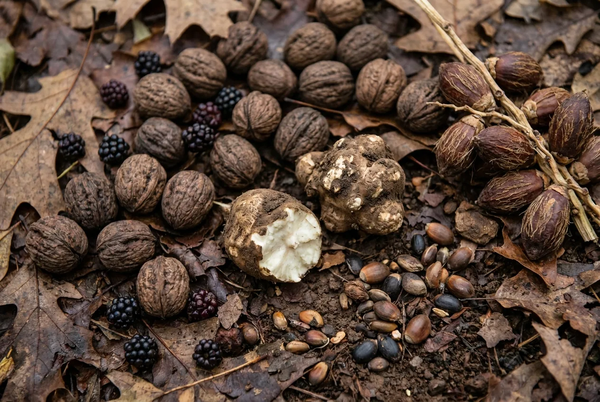

The non-avian dinosaurs are gone, the birds are not, and mammals inherit the space the rest of them left. Within ten million years there are mammals the size of rhinos, primates in the canopy and palm forests inside the Arctic Circle. The food problem that has run through every previous page is finally over.
The first honest "you live here". Fruit, nuts, roots, fish, small game, modern air, hardwood, clay. What you would still lack is the accumulated knowledge of which specific things are safe, and that costs people years rather than lifetimes.

Scale 0–40%. Indistinguishable from what you breathe now.
Scale 0–4,000 ppm. Very high in the Eocene, falling through the Oligocene until Antarctica glaciates at ~34 Ma. The Paleogene is the transition from hothouse to icehouse Earth.
Scale −20 to 250 °C. The Paleocene–Eocene Thermal Maximum: a massive carbon release warming the planet in under 20,000 years, and the closest geological analogue to what is happening now.
Fruit, nuts, palms, legumes, tubers. Angiosperms have had 70 million years to co-evolve with fruit-eating mammals and birds, which means fleshy, sugary and worth eating.
Scale 0–24 h. About 368 days per year. Close enough that you would never notice.
Scale 0–30 m. Around a tonne, in Paleocene Colombia at ~58 Ma. Snake body size is limited by ambient temperature, so its existence is itself a thermometer for how hot the tropics were.

Breathable air, drinkable water, edible fruit within reach, hardwood for fire and shelter, clay for pots. Every constraint that ended the previous thirteen pages is resolved simultaneously.
The realistic risk is now knowledge rather than scarcity. Angiosperms defend themselves chemically and the fruit in front of you belongs to no species you have ever been taught. Small test doses, long waits, and expect to be wrong more than once.
The Eocene tropics run hot enough that midday work is dangerous, and the PETM peak at 56 Ma pushes parts of the tropics toward the limit of what a mammal can shed. Live at 45 degrees latitude and none of this applies.
The constant across every interval on this site. No pathogen here is adapted to you, but a deep wound with no antibiotics is the same coin flip it has always been.
The Paleogene is the first entry where the environment is not the limiting factor on your life. Given a temperate latitude and a river, this is somewhere a small group of people could establish themselves permanently.
You do. Pick a mid latitude and skip the 56 Ma thermal maximum.

Modern. No adjustment at all.
Rivers and lakes everywhere. Boil it for the parasites, not for anything that targets you specifically.
Fruit, nuts, seeds, roots, fish, birds, eggs, small mammals. A complete diet for the first time in this list.
Hardwood, easy and controllable.
Timber, thatch, clay, hide. Everything a Neolithic builder would recognise.
Creodonts, entelodonts and, in the tropics, a snake that eats crocodiles. Manageable with fire and a bit of sense.